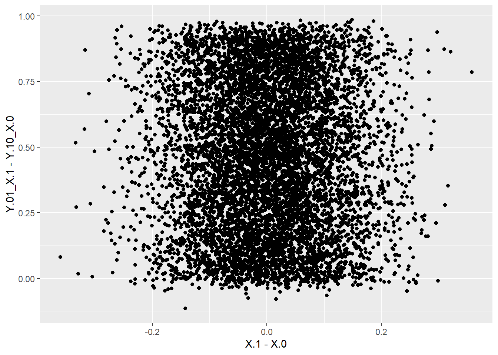
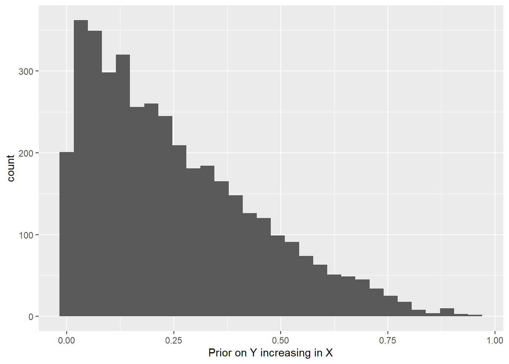

Chapter 5 Querying models
Models can be queried using the query_distribution and query_model functions. The difference between these functions is that query_distribution examines a single query and returns a full distribution of draws from the distribution of the estimand (prior or posterior); query_model takes a collection of queries and returns a dataframe with summary statistics on the queries.
The simplest queries ask about causal estimands given particular parameter values and case level data. Here is one surprising result of this form:
5.1 Case level queries
The query_model function takes causal queries and conditions (given) and specifies the parameters to be used. The result is a dataframe which can be displayed as a table.
For a case level query we can make the query given a particular parameter vector, as below:
make_model("X-> M -> Y <- X") %>%
set_restrictions(c(decreasing("X", "M"),
decreasing("M", "Y"),
decreasing("X", "Y"))) %>%
query_model(queries = "Y[X=1]> Y[X=0]",
given = c("X==1 & Y==1",
"X==1 & Y==1 & M==1",
"X==1 & Y==1 & M==0"),
using = c("parameters")) %>%
kable(
caption = "In a monotonic model with flat priors, knowledge
that $M=1$ *reduces* confidence that $X=1$ caused $Y=1$")| model | query | given | using | case_level | mean | sd | cred.low.2.5% | cred.high.97.5% |
|---|---|---|---|---|---|---|---|---|
| model_1 | Y[X=1]> Y[X=0] | X==1 & Y==1 | parameters | FALSE | 0.6154 | NA | 0.6154 | 0.6154 |
| model_1 | Y[X=1]> Y[X=0] | X==1 & Y==1 & M==1 | parameters | FALSE | 0.6000 | NA | 0.6000 | 0.6000 |
| model_1 | Y[X=1]> Y[X=0] | X==1 & Y==1 & M==0 | parameters | FALSE | 0.6667 | NA | 0.6667 | 0.6667 |
This example shows how inferences change given additional data on \(M\) in a monotonic \(X \rightarrow M \rightarrow Y \leftarrow X\) model. Surprisingly observing \(M=1\) reduces beliefs that \(X\) caused \(Y\), the reason being that perhaps \(M\) and not \(X\) was responsible for \(Y=1\).
5.2 Posterior queries
Queries can also draw directly from the posterior distribution provided by stan. In this next example we illustrate the joint distribution of the posterior over causal effects, drawing directly from the posterior dataframe generated by update_model:
data <- fabricate(N = 100, X = complete_ra(N), Y = X)
model <- make_model("X -> Y; X <-> Y") %>%
update_model(data, iter = 4000)
model$posterior_distribution %>%
data.frame() %>%
ggplot(aes(X.1 - X.0, Y.01_X.1 - Y.10_X.0)) +
geom_point()
We see that beliefs about the size of the overall effect are related to beliefs that \(X\) is assigned differently when there is a positive effect.
5.3 Query distribution
query_distribution works similarly except that the query is over an estimand. For instance:
make_model("X -> Y") %>%
query_distribution(list(increasing = increasing("X", "Y")),
using = "priors") %>%
ggplot(aes(increasing)) + geom_histogram() +
xlab("Prior on Y increasing in X") ## `stat_bin()` using `bins = 30`. Pick better value with
## `binwidth`.
5.4 Token and general causation
Note that in all these cases we use the same technology to make case level and population inferences. Indeed the case level query is just a conditional population query. As an illustration of this imagine we have a model of the form \(X \rightarrow M \rightarrow Y\) and are interested in whether \(X\) caused \(Y\) in a case in which \(M=1\). We answer the question by asking “what would be the probability that \(X\) caused \(Y\) in a case in which \(X=M=Y=1\)?” (line 3 below). This speculative answer is the same answer as we would get were we to ask the same question having updated our model with knowledge that in a particular case, indeed, \(X=M=Y=1\). See below:
model <- make_model("X->M->Y") %>%
set_restrictions(c(decreasing("X", "M"), decreasing("M", "Y"))) %>%
update_model(data = data.frame(X = 1, M = 1, Y = 1), iter = 8000)
query_model(
model,
query = "Y[X=1]> Y[X=0]",
given = c("X==1 & Y==1", "X==1 & Y==1 & M==1"),
using = c("priors", "posteriors"),
expand_grid = TRUE)| model | query | given | using | case_level | mean | sd | cred.low.2.5% | cred.high.97.5% |
|---|---|---|---|---|---|---|---|---|
| model_1 | Y[X=1]> Y[X=0] | X==1 & Y==1 | priors | FALSE | 0.2143 | 0.2080 | 0.0027 | 0.7523 |
| model_1 | Y[X=1]> Y[X=0] | X==1 & Y==1 | posteriors | FALSE | 0.2221 | 0.2107 | 0.0027 | 0.7553 |
| model_1 | Y[X=1]> Y[X=0] | X==1 & Y==1 & M==1 | priors | FALSE | 0.2552 | 0.2209 | 0.0042 | 0.7931 |
| model_1 | Y[X=1]> Y[X=0] | X==1 & Y==1 & M==1 | posteriors | FALSE | 0.2492 | 0.2203 | 0.0037 | 0.7835 |
We see the conditional inference is the same using the prior and the posterior distributions.
5.5 Complex queries
The Billy Suzy bottle breaking example illustrates complex queries. See Section 7.2.